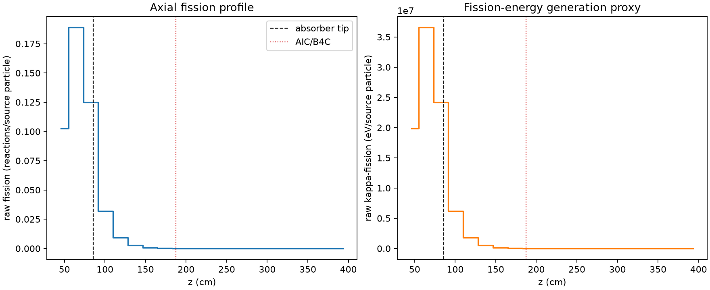
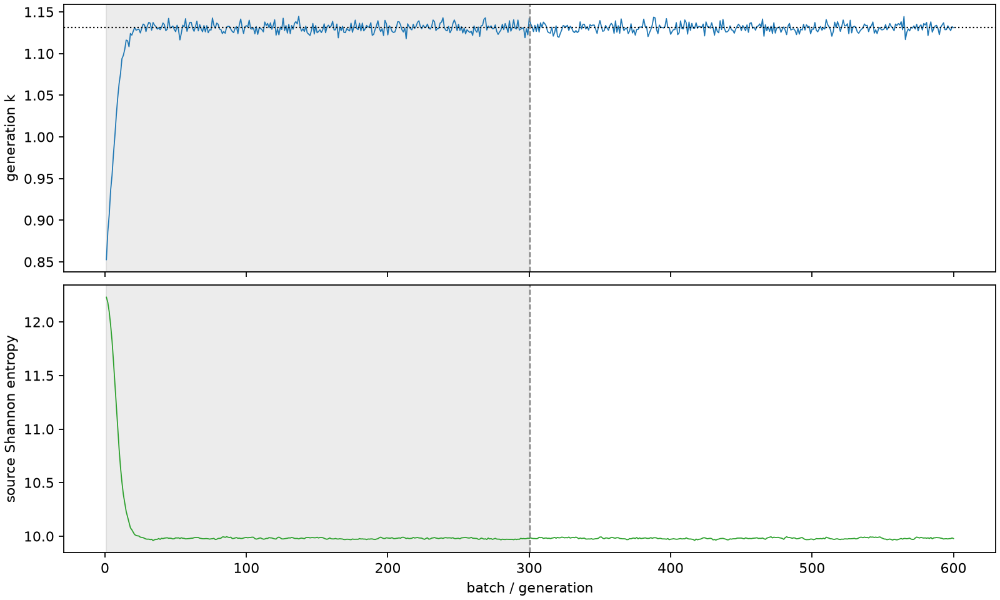

| field | value |
|---|---|
| experiment | V2-STAGE_256_OGRENCI_01-0003 |
| k | 1.1309553698204504 |
| MC standard error | 0.00018989048243483718 |
| seconds | 999.6050911179918 |
| acceptance | not_assessed |
| convergence | review_required |
Completed is output integrity only; physical and statistical review required. Zero tallies do not prove zero production or zero uncertainty.
| diagnostic | value |
|---|---|
| geometric fuel voxels | 5280 |
| zero fission tally voxels | 1914 |
| low signal fuel voxels | 3042 |
| low signal fission share | 0.00011532817330309248 |
| low signal kappa share | 0.00011537151811685136 |
| important fission share | 0.9501382859022828 |
| previous filter included | 2238 |
| duration estimate s | 1562.5173488400023 |
| actual minus estimate s | -562.9122577220105 |
| fission relative MC error | statistics |
|---|---|
| all_geometric_fuel | {"voxels": 5280, "positive_mean_voxels": 3366, "zero_mean_voxels": 1914, "undefined_relative_error_voxels": 1914, "median": 0.057334186001356376, "p95": 0.9976146128360954, "maximum": 1.0000000000000002} |
| low_signal | {"voxels": 3042, "positive_mean_voxels": 1128, "zero_mean_voxels": 1914, "undefined_relative_error_voxels": 1914, "median": 0.5826894787353372, "p95": 1.0, "maximum": 1.0000000000000002} |
| important_95pct | {"voxels": 963, "positive_mean_voxels": 963, "zero_mean_voxels": 0, "undefined_relative_error_voxels": 0, "median": 0.005024119552990806, "p95": 0.009472445492080392, "maximum": 0.010705396671699584} |
| outside_previous_filter | {"voxels": 3042, "positive_mean_voxels": 1128, "zero_mean_voxels": 1914, "undefined_relative_error_voxels": 1914, "median": 0.5826894787353372, "p95": 1.0, "maximum": 1.0000000000000002} |
| kappa_fission relative MC error | statistics |
|---|---|
| all_geometric_fuel | {"voxels": 5280, "positive_mean_voxels": 3366, "zero_mean_voxels": 1914, "undefined_relative_error_voxels": 1914, "median": 0.05725772734212371, "p95": 0.9976304601811736, "maximum": 1.0000000000000002} |
| low_signal | {"voxels": 3042, "positive_mean_voxels": 1128, "zero_mean_voxels": 1914, "undefined_relative_error_voxels": 1914, "median": 0.5822435620672483, "p95": 1.0, "maximum": 1.0000000000000002} |
| important_95pct | {"voxels": 963, "positive_mean_voxels": 963, "zero_mean_voxels": 0, "undefined_relative_error_voxels": 0, "median": 0.005018215411569364, "p95": 0.009459851705112975, "maximum": 0.010690198308322824} |
| outside_previous_filter | {"voxels": 3042, "positive_mean_voxels": 1128, "zero_mean_voxels": 1914, "undefined_relative_error_voxels": 1914, "median": 0.5822435620672483, "p95": 1.0, "maximum": 1.0000000000000002} |
| axial bin | fission share | kappa-fission share |
|---|---|---|
| 1 | 0.22210708481568697 | 0.22210408233855403 |
| 2 | 0.4090265550789875 | 0.40900290733262135 |
| 3 | 0.2709616017787579 | 0.2709620386606832 |
| 4 | 0.0692499790492187 | 0.06926835412755039 |
| 5 | 0.020332570346485158 | 0.02033810239764111 |
| 6 | 0.0059372816398158244 | 0.005938895640396359 |
| 7 | 0.0017257473856445403 | 0.0017262115607156764 |
| 8 | 0.00048303651345592556 | 0.0004831934441335319 |
| 9 | 0.0001287650425693165 | 0.0001288182959308626 |
| 10 | 3.519278474930695e-05 | 3.5205999349839595e-05 |
| 11 | 9.573299240815164e-06 | 9.576051655982774e-06 |
| 12 | 1.9671354217257648e-06 | 1.9685370285861476e-06 |
| 13 | 4.765336484643645e-07 | 4.770292765504792e-07 |
| 14 | 1.685963177849279e-07 | 1.6858446252828254e-07 |
| 15 | 0.0 | 0.0 |
| 16 | 0.0 | 0.0 |
| 17 | 0.0 | 0.0 |
| 18 | 0.0 | 0.0 |
| 19 | 0.0 | 0.0 |
| 20 | 0.0 | 0.0 |
Histories include the inactive-to-active transition at batch 300. kappa-fission approximates fission energy production, not total heat deposition.

